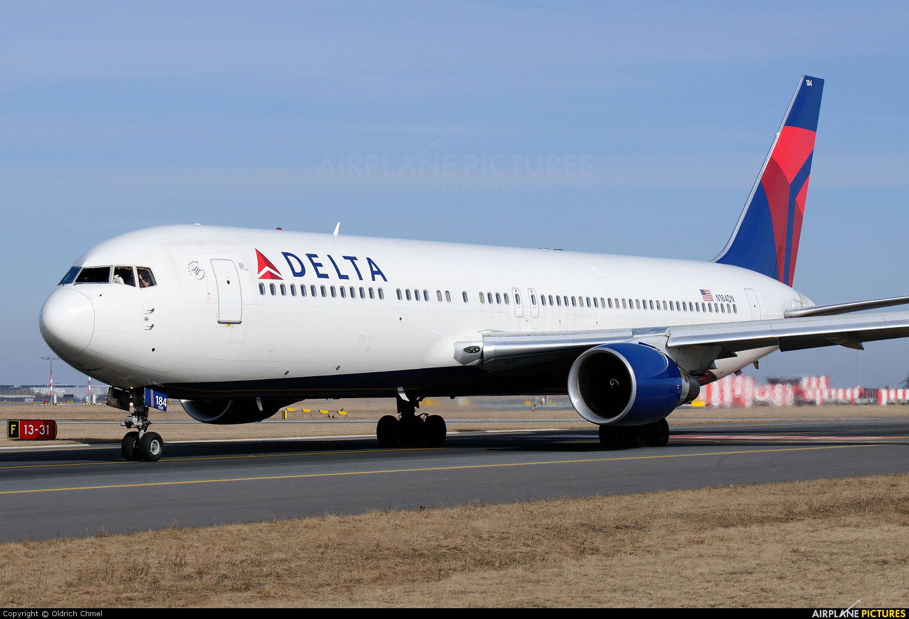

767 production began in the 1980s. Since then, some airlines have withdrawn their older aircraft,
others have kept them for a number of reasons (financial, reliability, etc.). But at the moment what are the oldest 767s in operation? Let's find out.
The oldest 767 still flying
The oldest aircraft are N605KW (36 years old) and N602KW (35 years old). They fly to Eastern Airlines.
Next
JY-JAL is the next 767 flying for Jordan Aviation. He is 32 years old.
Delta and the crowd

Delta Airlines has the largest fleet of 767 in the world. Of these, 5 aircraft are 30 years old.